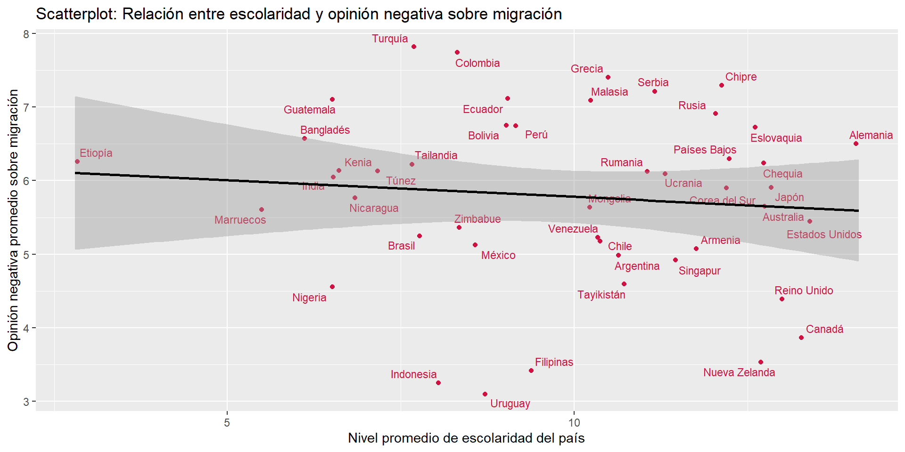
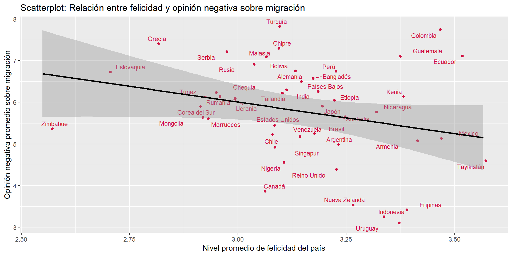
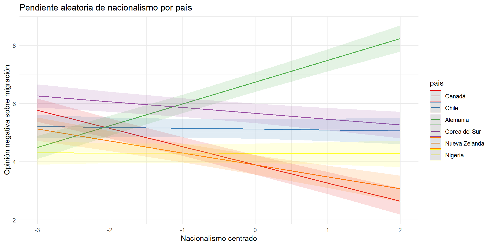
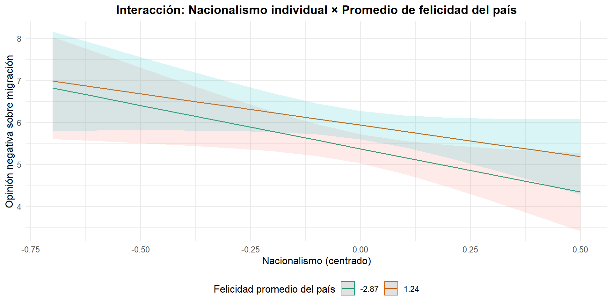
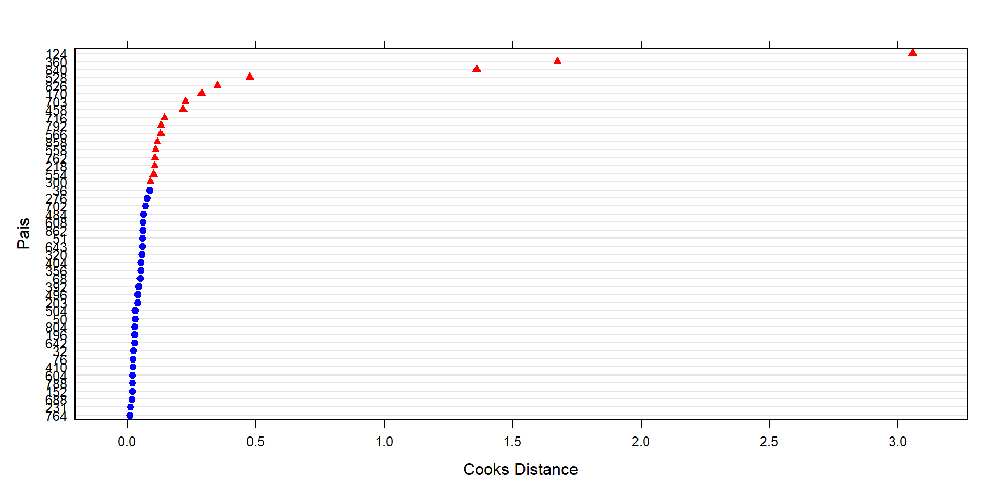

Paula Córdova, Jesús Díaz Molina & Benjamín Zavala
Análisis de datos multinivel - 2025
Departamento de Sociología, Universidad de Chile
Santiago, 24 de Junio de 2025
Lo que se busca estudiar son las opiniones negativas hacia la migración y sus cambios según país.
La migración como fenómeno global ha emergido en los últimos años, a día de hoy más de 304 millones de migrantes en el mundo (ONU, 2025)
Ejemplo de esto es el aumento sostenido de la migración en países OCDE durante los últimos años (OCDE, 2024)
Este fenómeno es multicausal, donde podemos encontrar causas económicas, políticas o sociales (Armijos-Orellana et al, 2022)
En comparativa respecto a las mujeres, son los hombres quienes presentan una mayor tendencia de opiniones negativas hacia la migración (Servicio Jeusita de Migrantes, 2020)
Existe una tendencia entre posiciones de extrema derecha y opiniones negativas hacia los migrantes (Servicio Jesuita a Migrantes, 2020; Akkerman, 2018)
Las tendencias nacionalistas, a veces recaladas en el discurso “patriota”, presentan una mayor tendencia hacia una opinión negativa a los migrantes (Akkerman, 2018; Buraschi y Aguilar-Idañez, 2023).
Aquellos sectores con menor nivel de ingreso, pueden presentar tendencias hacia opiniones más negativas contra los migrantes, debido por la competencia en puestos no especializados de trabajo. (Romero, 2021; Emmenegger y Klemmensen, 2013)
Desde la teoría psicosocial se plantea cómo las emociones pueden influir en una conducta prosocial, la cual vincula el trato y opinión frente a los migrantes. Un mayor bienestar emocional y sentimiento de felicidad tiene una asociación positiva con comportamientos prosociales (Espelt et al, 1998)
El nivel de escolaridad medio influye en las opiniones hacia los migrantes por un motivo parecido al de los sectores de menor ingreso, y es que se forma competencia por aquellos trabajos no especializados que no requieren escolaridad de más años (Emmenegger y Klemmensen, 2013)
¿En qué medida los factores contextuales de cada país, como su felicidad promedio y su promedio de escolaridad, y los factores individuales, como el ser mujer, la posición política, el nacionalismo, y el ingreso propio, influyen en tener una opinión negativa hacia las personas migrantes?
Nivel 1:
\(H_1\): Personas que se identifican con posiciones políticas inclinadas a la derecha tenderán hacia opiniones más negativas respecto a la migración.
\(H_2\): Personas con menores niveles de ingresos tenderán hacia una opinión más negativa hacia la migración.
\(H_3\): Las mujeres tienen opiniones menos negativas hacia la migración que los hombres.
\(H_4\): A mayor nivel de nacionalismo se presenta una mayor opinión negativa hacia la migración.
\(H_5\): Países con menores promedios de años de escolaridad presentan opiniones más negativas hacia la migración.
\(H_6\): Países con mayor felicidad promedio tenderán hacia opiniones menos negativas respecto a las personas migrantes.
Nivel 3
Séptima ola del World Values Survey (WVS), con datos recolectados entre 2017 y 2022.
Presenta datos individuales y contextuales por país, obtenidos de otras instituciones.
Tras limpieza con listwise, 54716 casos y 46 países.
Construcción de una escala de opiniones negativas sobre la migración con 5 variables de la base, obteniendo un alfa de cronbach .77.
| Statistic | N | Min | Pctl(25) | Median | Mean | Pctl(75) | Max | St. Dev. |
| op_mig | 54,716 | 0 | 3 | 6 | 5.64 | 8 | 10 | 3.02 |
| female | 54,716 | 0 | 0 | 1 | 0.51 | 1 | 1 | 0.50 |
| nacionalismo | 54,716 | 1 | 3 | 4 | 3.44 | 4 | 4 | 0.75 |
| pos_pol | 54,716 | 1 | 5 | 5 | 5.75 | 7 | 10 | 2.45 |
| personal_income | 54,716 | 1 | 4 | 5 | 5.01 | 6 | 10 | 2.11 |
| Statistic | N | Min | Pctl(25) | Median | Mean | Pctl(75) | Max | St. Dev. |
| pais | 46 | 32 | 221.2 | 490 | 460.33 | 698.5 | 862 | 264.53 |
| happines_promedio_pais | 46 | 2.55 | 3.01 | 3.15 | 3.14 | 3.26 | 3.57 | 0.21 |
| meanschooling | 46 | 2.80 | 7.85 | 10.25 | 9.82 | 12.07 | 14.10 | 2.57 |
Se estimaron un total de 6 modelos:
Modelo nulo
\[ \text{op_mig}_{ij} = \gamma_{00} + u_{0j} + r_{ij} \]
Modelo 1: con variables individuales
\[ \text{op_mig}_{ij} = \gamma_{00} + \gamma_{01} \text{female} + \gamma_{02} \text{pos_pol} + \gamma_{03} \text{nacionalismo} + \gamma_{04} \text{personal_income} + u_{0j} + r_{ij} \]
Modelo 2: con variables contextuales
\[ \text{op_mig}_{ij} = \gamma_{00} + \gamma_{01} \text{meanschooling}+ \gamma_{02} \text{happiness_promedio_pais} + u_{0j} + r_{ij} \]
Modelo 3: multinivel
\[ \begin{align*} \text{op_mig}_{ij} &= \gamma_{00} + \gamma_{01} \text{meanschooling} + \gamma_{02} \text{happiness_promedio_pais} + \gamma_{03} \text{female} + \gamma_{04} \text{pos_pol} + \gamma_{05} \text{nacionalismo} \\ + &\gamma_{06} \text{personal_income} + u_{0j} + r_{ij}\end{align*} \]
Modelo 4: con pendiente aleatoria
\[ \begin{align*} \text{op_mig}_{ij} &= \gamma_{00} + \gamma_{01} \text{meanschooling} + \gamma_{02} \text{happiness_promedio_pais} + \gamma_{03} \text{female} + \gamma_{04} \text{pos_pol} + \gamma_{05} \text{nacionalismo} \\ + &\gamma_{06} \text{personal_income} + u_{0j} + u_{1j} \text{nacionalismo} + r_{ij} \end{align*} \]
Modelo 5: interacción entre niveles
\[ \begin{align*} \text{op_mig}_{ij} &= \gamma_{00} + \gamma_{01} \text{meanschooling} + \gamma_{02} \text{happiness_promedio_pais} + \gamma_{03} \text{female} + \gamma_{04} \text{pos_pol} + \gamma_{05} \text{nacionalismo} \\ + &\gamma_{06} \text{personal_income} + \gamma_{07} \text{happiness_promedio_pais} \times \text{nacionalismo} + u_{0j} + r_{ij} \end{align*} \]


| Nulo | Individual | Agregado | Multinivel | Pendiente aleatoria nacionalismo | Interacción entre niveles | |||||||||||||
|---|---|---|---|---|---|---|---|---|---|---|---|---|---|---|---|---|---|---|
| Predictors | Estimates | std. Error | p | Estimates | std. Error | p | Estimates | std. Error | p | Estimates | std. Error | p | Estimates | std. Error | p | Estimates | std. Error | p |
| (Intercept) | 5.79 | 0.17 | <0.001 | 5.21 | 0.19 | <0.001 | 11.73 | 2.82 | <0.001 | 11.25 | 2.83 | <0.001 | 10.32 | 2.64 | <0.001 | 12.75 | 2.98 | <0.001 |
| female | -0.02 | 0.02 | 0.445 | -0.02 | 0.02 | 0.446 | -0.00 | 0.02 | 0.844 | -0.02 | 0.02 | 0.450 | ||||||
| pos pol | 0.09 | 0.00 | <0.001 | 0.09 | 0.00 | <0.001 | 0.08 | 0.00 | <0.001 | 0.09 | 0.00 | <0.001 | ||||||
| nacionalismo | 0.13 | 0.02 | <0.001 | 0.13 | 0.02 | <0.001 | 0.12 | 0.06 | 0.031 | -0.29 | 0.26 | 0.251 | ||||||
| personal income | -0.08 | 0.01 | <0.001 | -0.08 | 0.01 | <0.001 | -0.08 | 0.01 | <0.001 | -0.08 | 0.01 | <0.001 | ||||||
| meanschooling | -0.07 | 0.07 | 0.301 | -0.05 | 0.07 | 0.458 | -0.03 | 0.06 | 0.693 | -0.05 | 0.07 | 0.458 | ||||||
| happines promedio pais | -1.67 | 0.83 | 0.044 | -1.76 | 0.84 | 0.035 | -1.53 | 0.78 | 0.049 | -2.25 | 0.88 | 0.011 | ||||||
| happines promedio pais × nacionalismo |
0.14 | 0.08 | 0.096 | |||||||||||||||
| Random Effects | ||||||||||||||||||
| σ2 | 7.53 | 7.45 | 7.53 | 7.45 | 7.36 | 7.45 | ||||||||||||
| τ00 | 1.40 pais | 1.42 pais | 1.33 pais | 1.34 pais | 1.89 pais | 1.34 pais | ||||||||||||
| τ11 | 0.13 pais.nacionalismo | |||||||||||||||||
| ρ01 | -0.63 pais | |||||||||||||||||
| ICC | 0.16 | 0.16 | 0.15 | 0.15 | 0.16 | 0.15 | ||||||||||||
| N | 46 pais | 46 pais | 46 pais | 46 pais | 46 pais | 46 pais | ||||||||||||
| Observations | 54716 | 54716 | 54716 | 54716 | 54716 | 54716 | ||||||||||||
| Marginal R2 / Conditional R2 | 0.000 / 0.157 | 0.010 / 0.169 | 0.014 / 0.161 | 0.023 / 0.172 | 0.018 / 0.172 | 0.023 / 0.172 | ||||||||||||
| Nulo | Individual | Agregado | Multinivel | Pendiente aleatoria nacionalismo | Interacción entre niveles | |||||||||||||
|---|---|---|---|---|---|---|---|---|---|---|---|---|---|---|---|---|---|---|
| Predictors | Estimates | std. Error | p | Estimates | std. Error | p | Estimates | std. Error | p | Estimates | std. Error | p | Estimates | std. Error | p | Estimates | std. Error | p |
| (Intercept) | 5.79 | 0.17 | <0.001 | 5.80 | 0.18 | <0.001 | 5.76 | 0.17 | <0.001 | 5.77 | 0.17 | <0.001 | 5.77 | 0.17 | <0.001 | 5.77 | 0.17 | <0.001 |
| female | -0.02 | 0.02 | 0.445 | -0.02 | 0.02 | 0.446 | -0.00 | 0.02 | 0.842 | -0.02 | 0.02 | 0.450 | ||||||
| pos pol cmc | 0.09 | 0.00 | <0.001 | 0.09 | 0.00 | <0.001 | 0.08 | 0.00 | <0.001 | 0.09 | 0.00 | <0.001 | ||||||
| nacionalismo cmc | 0.13 | 0.02 | <0.001 | 0.13 | 0.02 | <0.001 | 0.12 | 0.06 | 0.029 | 0.14 | 0.02 | <0.001 | ||||||
| personal income cmc | -0.08 | 0.01 | <0.001 | -0.08 | 0.01 | <0.001 | -0.08 | 0.01 | <0.001 | -0.08 | 0.01 | <0.001 | ||||||
| meanschooling gmc | -0.07 | 0.07 | 0.301 | -0.07 | 0.07 | 0.302 | -0.06 | 0.07 | 0.392 | -0.07 | 0.07 | 0.302 | ||||||
| happiness gmc | -1.67 | 0.83 | 0.044 | -1.67 | 0.83 | 0.044 | -1.60 | 0.79 | 0.044 | -1.67 | 0.83 | 0.044 | ||||||
| happiness gmc × nacionalismo cmc |
0.14 | 0.08 | 0.094 | |||||||||||||||
| Random Effects | ||||||||||||||||||
| σ2 | 7.53 | 7.45 | 7.53 | 7.45 | 7.36 | 7.45 | ||||||||||||
| τ00 | 1.40 pais | 1.40 pais | 1.33 pais | 1.32 pais | 1.32 pais | 1.32 pais | ||||||||||||
| τ11 | 0.13 pais.nacionalismo_cmc | |||||||||||||||||
| ρ01 | 0.31 pais | |||||||||||||||||
| ICC | 0.16 | 0.16 | 0.15 | 0.15 | 0.16 | 0.15 | ||||||||||||
| N | 46 pais | 46 pais | 46 pais | 46 pais | 46 pais | 46 pais | ||||||||||||
| Observations | 54716 | 54716 | 54716 | 54716 | 54716 | 54716 | ||||||||||||
| Marginal R2 / Conditional R2 | 0.000 / 0.157 | 0.009 / 0.166 | 0.014 / 0.161 | 0.023 / 0.170 | 0.020 / 0.175 | 0.023 / 0.170 | ||||||||||||
| npar | AIC | BIC | logLik | deviance | Chisq | Df | Pr(>Chisq) | |
|---|---|---|---|---|---|---|---|---|
| Modelo 3: Multinivel | 9 | 265397.0 | 265477.2 | -132689.5 | 265379.0 | NA | NA | NA |
| Modelo 4: Pendiente aleatoria | 11 | 264820.7 | 264918.8 | -132399.4 | 264798.7 | 580.277 | 2 | 0 |


La interacción muestra que…
Países influyentes (cook > 0.087 ):

| Modelo original | Modelo sin influyentes | |||
|---|---|---|---|---|
| Predictors | Estimates | p | Estimates | p |
| (Intercept) | 5.77 | <0.001 | 5.60 | <0.001 |
| meanschooling gmc | -0.06 | 0.392 | -0.17 | 0.221 |
| happiness gmc | -1.60 | 0.044 | -5.24 | <0.001 |
| female | -0.00 | 0.842 | -0.01 | 0.797 |
| pos pol cmc | 0.08 | <0.001 | 0.08 | <0.001 |
| nacionalismo cmc | 0.12 | 0.029 | 0.17 | 0.107 |
| personal income cmc | -0.08 | <0.001 | -0.09 | <0.001 |
| Random Effects | ||||
| σ2 | 7.36 | 7.59 | ||
| τ00 | 1.32 pais | 0.97 pais | ||
| τ11 | 0.13 pais.nacionalismo_cmc | 0.20 pais.nacionalismo_cmc | ||
| ρ01 | 0.31 pais | 0.36 pais | ||
| ICC | 0.16 | 0.12 | ||
| N | 46 pais | 19 pais | ||
| Observations | 54716 | 23660 | ||
| Marginal R2 / Conditional R2 | 0.020 / 0.175 | 0.125 / 0.233 | ||
Akkerman, T. (2024). Inmigración y redistribución en Europa… link
Armijos-Orellana, A. C., et al. (2022). Los motivos de la migración… link
Buraschi, D., & Aguilar-Idañez, M. J. (2023). La amenaza percibida… link
Emmenegger, P., & Klemmensen, R. (2013). Immigration and redistribution revisited… link
OCDE (2024). International Migration Outlook 2024… link
ONU (2025). Migración. link
Romero Montero, A. (2021). Actitudes hacia la inmigración… link
SJM Chile (2020). Barómetro de percepción de la migración… link